by Abraham Kandel
CRC Press, CRC Press LLC
ISBN: 084934297x Pub Date: 11/01/91
|
|
Fuzzy Expert Systems
by Abraham Kandel CRC Press, CRC Press LLC ISBN: 084934297x Pub Date: 11/01/91 |
| Previous | Table of Contents | Next |
We note the smaller Poss [R-/D E], the more specifically we know F. That is, the rule has fired to a higher degree the smaller Poss [R-/D E]. We further note that if R1 ⊂ R2, R1(x,y) ≤ R2(x,y) for all x,y, then R-1  R-2 and, hence;
R-2 and, hence;
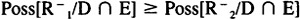
Thus, we see that the larger the relationship R, the more the rules fired. We shall say R1 is more tolerant than R2 if R2 ⊂ R1. The most tolerant relationship is R = X × Y. In this case R- = φ and the rule always fires perfectly. The least tolerant case consists of the situation in which:
| R(x*,y*) = 1 |
| R(x,y) = 0 |
for all other. In this case, the rule perfectly fires only if V is {x*} and W is {y*}.
While we have concentrated on the situation in which we are trying to capture V R W where R is a form of equals (“close”, “nearly”, etc.), we can also use the same ideas to capture any relationship of the form:
f1(V) R f2(W)
where f1 and f2 are any functions. An example of this would be a situation in which we require:
3*V close to W2 + 5
In this case we would have (V,W) is R′ where R′ would reflect the degree of tolerance, as well as the structures of f1 and f2.
Again, assume we have the rule:
If (V,W) is R then U is B
and we have the knowledge:
V is D and W is E
This situation gives us the inference U is F where:
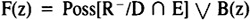
We shall say that the rule has fired to at least degree α if:
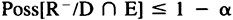
We therefore see that a necessary and sufficient condition for the rule to fire to at least degree α is that for each pair (x,y) ∈ X × Y
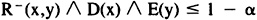
One question we may ask is, given a value V is D, what are the allowable values for W, so that our rule fires to at least level α?
In order to answer this question we introduce a family of subsets on Y, one for each x, denoted Ux, so that for each pair (x,y) Ux(y) is the largest value of K for which:
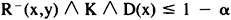
Then any subset E of Y so that:
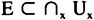
fires the rule to at least degree α.
We further note that if D(x) ≤ 1 - α , then Ux(y) can be any value, and we still satisfy our requirement. Thus:
Ux = Y if D(x) ≤ 1 - α
On the other hand, if D(x) > 1 - α, we then require that for each y:
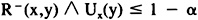
In this case, if R(x,y) ≥ α then we have met the conditions regardless of the value of Ux(y) and, thus, we can make Ux(y) = 1. If R(x,y) < α, then we require that Ux(y) ≤ 1 - α.
Thus, for D(x) ≥ 1 - α:
| Ux(y) = 1 if R(x,y) ≥ α Ux(y) = 1 - αif R(x,y) < α |
Thus, the largest possible value for W for the rule to fire to degree α is A, where:
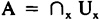
Since we require E to be normal, it is possible that given a D it may be impossible to fire the rule. This situation occurs if for each y there exists some x ∈ X where D(x) > 1 - α and R(x,y) < α. On the other hand, if there exists y ∈ Y such that for all x ∈ X either D(x) ≤ 1 - α or R(x,y) ≥ α, then we can always find a normal W to fire the rule.
We further note that if D1 ⊂ D2 then if A1 and A2 are the respective maximal values for W for firing to degree of at least α, it follows that A2 ⊂ A1. Further, we easily show that if R1 ⊂ R2 then under a value V is D, R2 requires a less specific value for W.
In the preceding situations we have assumed that the variable condition has occurred in the antecedent. In some cases this variable condition may occur in the consequent. Consider the situation in which we have the following rule:
If V is A then U is R-related to W
This translates to:
If V is A then (U,W) is R
where R is a relationship on Y × Z. This translates to:
H = A- ∪ R
Assume we have the data:
| V is D W is E |
and we are interested in finding F so that U is F.
In this case:
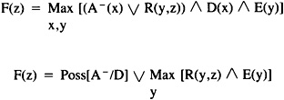
In this section we look at the relationship between relational requirements and fixed requirements.
Assume V, W, and U are three variables taking their values in the sets X, Y, and Z, respectively. Consider the fixed antecedent rule:
If V is A and W is B then U is C
where A, B, and C are normal fuzzy subsets of X, Y, and Z, respectively. This rule translates into:
H1 = A- ∪ B- ∪ C
If we have the data:
| V is D W is E |
then we can infer U is F1 where:
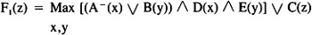
Consider a relational rule:
If (V,W) is R then U is C
where R is a relation on X × Y. This induces
H2 = R- U C
With the same data, V is D and W is E, we infer U is F2 where:
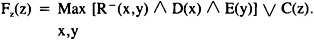
Consider the situation when the relation R is defined by:
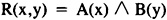
This is always possible since the only requirement on R is that it is normal. In this case:
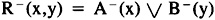
and thus F2(z) = F1(z).
| Previous | Table of Contents | Next |